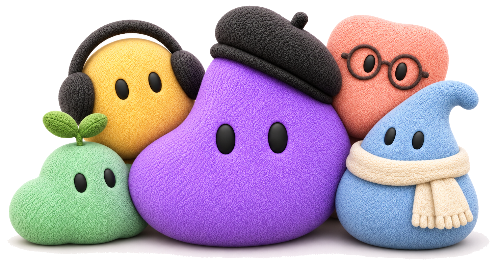

Selected design. The buddies' group photo replaces Doany on Welcome. The window is plain white (no pigment horizon, no grain), the type and Get started sit on top, and the group runs off the bottom edge. Not in code yet.
Type group 24 below the chrome; wordmark to heading 16, heading to Get started 24. Photo 960 wide, its box about 43 below Get started (about 56 to the beret), about 22% cut at the bottom.

Type group 16 below the chrome. The photo box is again about 43 below Get started and shrinks with the height left (540 wide) so every buddy's eyes stay in view.
.doan/assets/buddies/group/group.png, trimmed from group-original.png with a 16 px white border, its near-white backdrop filled to white, drawn with mix-blend-mode: multiply on the white panel.